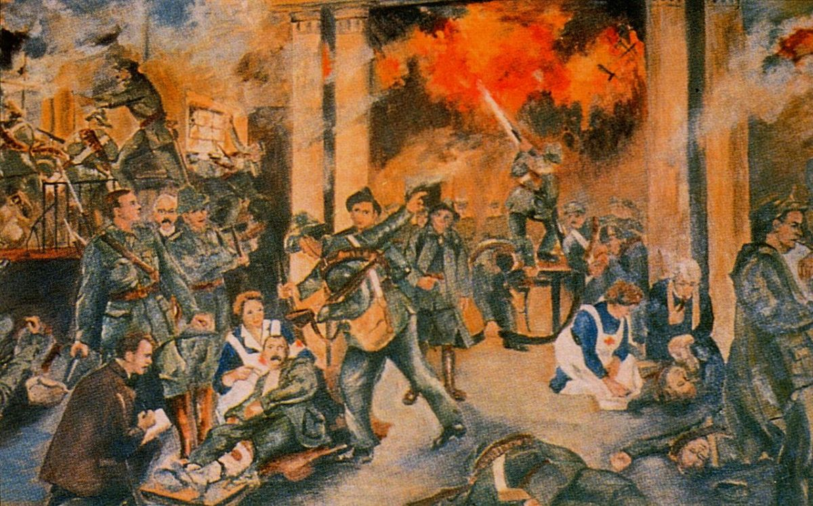

The 1916 Rising

On Friday, the 28th of April 1916, the republican forces had evacuated the burning General Post Office.
A barricade had erected by British forces in Moore Lane.
On Friday 28th of April, Elizabeth O'Farrell as the nurse by profession, spent the night taking care of the wounded.

The back room in No.16 Moore Street, where it is said that a wounded James Connolly lay and a surrender was first discussed by Patrick Pearse and the other leaders.
Patrick Pearse and the nurse Elizabeth O’Farrell delivered the unconditional surrender to the British on Parnell Street, Saturday 29th of April 1916.